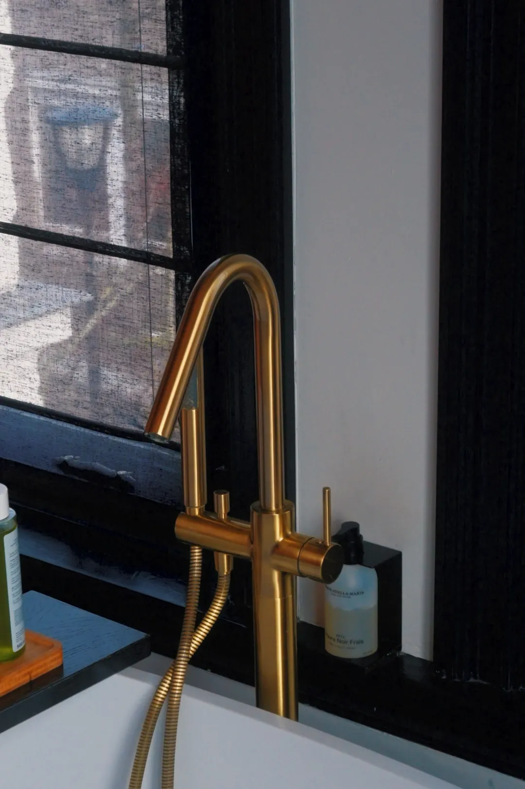
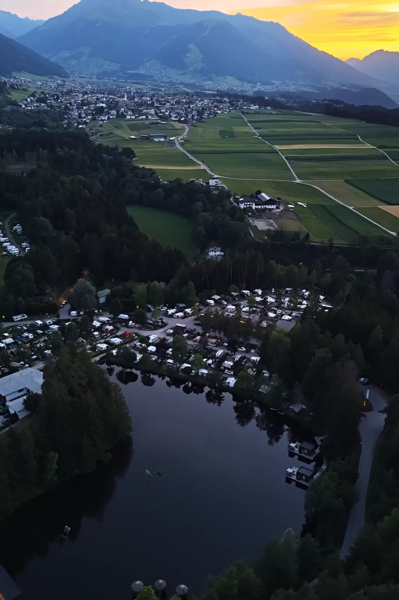

Zintuiglijk
Licht, textuur, damp op een glas, een handdoek over een stoel. Mensenmaat voelbaar in beeld — ook zonder mensen in beeld.

De plek die je gebouwd hebt, eindelijk gezien zoals jij hem ziet wanneer niemand kijkt. Voor resorts, chalets, glampings en tafels die het waard zijn om te voelen.
High-end gastvrijheid verkoopt geen kamer. Het verkoopt een gevoel. Dan moet het beeld dezelfde taal spreken als het verblijf zelf — niet als marketingmateriaal erover.
De Loor klinkt als de deur. Dat is het uitgangspunt: elke film is een deur die iemand opent naar een plek waar hij nog nooit is geweest.
Eén studio voor film, fotografie én drone. Geen crew van vijf, geen productiemachine — één paar ogen dat de hele plek in dezelfde toon vastlegt.
Licht, textuur, damp op een glas, een handdoek over een stoel. Mensenmaat voelbaar in beeld — ook zonder mensen in beeld.
Drone-shots met een reden. Langzame, doelgerichte reveals in plaats van rondvliegen tot er iets moois voorbijkomt.
Kalm, warm, filmisch gegradeerd. Geen oververzadigde telefoonlook. Elk shot beweegt, maar nooit zonder aanleiding.
Van een Tiroolse sky pool tot een Italiaanse ontbijttafel in Eindhoven. Steeds dezelfde vraag: wat voelt een gast op het moment dat hij binnenkomt?



Een deel van het werk is in opdracht gemaakt en verschijnt eerst op de kanalen van de locatie zelf. Vraag gerust naar recent materiaal dat nog niet online staat.
Vraag de volledige selectie aanElke productie levert naast de horizontale film ook verticals — 9:16, klaar om te plaatsen, zonder dat er nog iets aan hoeft te gebeuren.
Alles wordt in één bezoek vastgelegd en gegradeerd in dezelfde toon. Je krijgt volledige gebruiksrechten voor web, social en campagnes — geen nabetaling per plaatsing.
De film die bovenaan je homepage staat en in drie seconden overbrengt waar een brochure drie pagina's voor nodig heeft. Eén verhaal, van aankomst tot avondlicht.
Homepage · Boekingssite · PersEen beeldbank die je het hele seizoen voedt: suites, tafel, wellness, detail. Warm gegradeerd, consistent, klaar voor web én druk.
Website · OTA's · PrintHet perspectief dat in één beweging laat zien waaróm je plek ligt waar hij ligt. Langzame reveals, horizontaal en verticaal aangeleverd.
Levering binnen 48 uur9:16-clips uit dezelfde draaidag, gesneden op ritme. Jij plaatst ze, de locatie wordt getagd, en het beeld blijft van jou.
Reels · Stories · TikTokWerken vanuit Nederland, met vaste reisperiodes in de Alpen. Ligt je locatie in Tirol, Zuid-Tirol of Beieren, dan is er waarschijnlijk al een moment dat ik in de buurt ben.
Plan een shootGeen crew die het terras bezet en geen dag vol wachten. De voorbereiding gebeurt vooraf, zodat er op locatie alleen nog gefilmd hoeft te worden.
Twintig minuten, meestal via bellen. Wie komt er bij jou logeren, en wat moet die persoon voelen voordat hij boekt?
Vooraf leg ik vast welk licht waar valt en op welk uur. Vliegzones, route en volgorde staan vast voordat ik de auto instap.
Eén persoon, alle disciplines. Gefilmd rond de rustige uren, zodat het terras vol kan blijven en niemand hoeft te wijken.
Gegradeerde masters, horizontaal én verticaal, plus stills voor web en print. Volledige gebruiksrechten, in één downloadlink.


De Loor Studio is Rik Lammerts — filmmaker, fotograaf en dronepiloot, werkend vanuit Oosterhout. Film, foto en aerial komen bij mij uit dezelfde hand, waardoor alles wat je terugkrijgt in dezelfde toon staat.
De meeste studio's doen één van de drie goed. Dat merk je later: een prachtige film naast foto's die er niet bij passen. Bij één maker bestaat dat probleem niet.
Het werk speelt zich af tussen Nederland en de Alpen. Wat ik niet doe: budgethotels, standaard bedrijfsvideo's en evenementenverslaglegging. Niet uit hoogmoed — het vraagt simpelweg een andere blik dan deze.
Vertel kort wat voor plek het is en wanneer het licht er op zijn mooist valt. Ik reageer meestal dezelfde dag, met een voorstel voor een moment dat past.